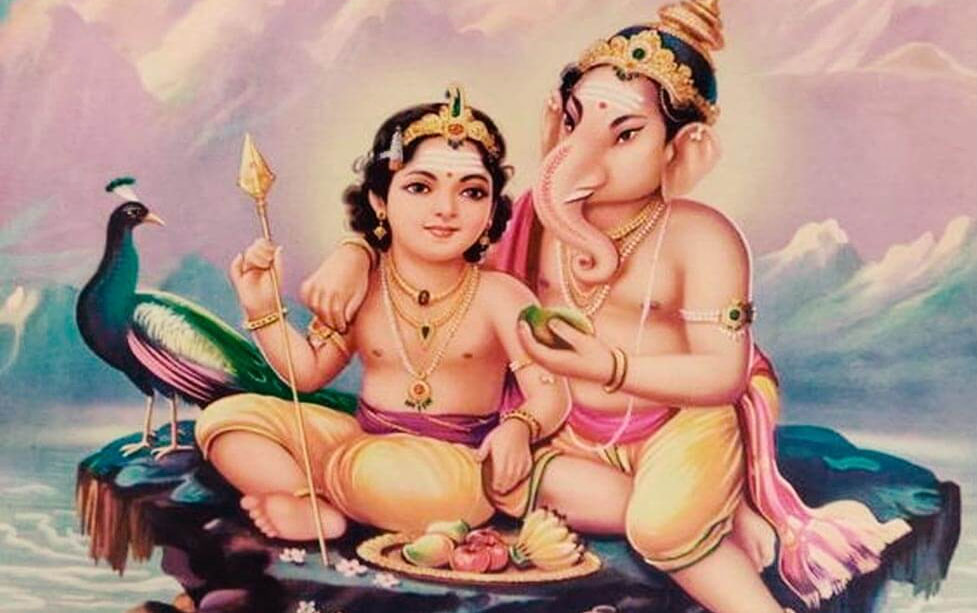

Chennai District
3 temples • map included


Kapaleeshwarar Temple
Significance: Removes obstacles

Parthasarathy Temple
Significance: Relief from doshas

Ashtalakshmi Temple
Significance: Wealth and prosperity
Kanchipuram District
3 temples • map included

Ekambareswarar Temple
Significance: Health and longevity

Varadharaja Perumal Temple
Significance: Fertility and family welfare

Kamakshi Amman Temple
Significance: Marriage harmony
Madurai District
2 temples • map included


Meenakshi Amman Temple
Significance: Marriage and family blessings
Thiruparankundram Murugan Temple
Significance: Victory and courage
Thanjavur District
2 temples • map included


Brihadeeswarar Temple
Significance: Spiritual power

Srirangam Ranganathaswamy Temple
Significance: Removes doshas
Tirunelveli District
2 temples • map included


Nellaiappar Temple
Significance: Health and prosperity

Nava Tirupati Temples
Significance: Astrological remedies (cluster)
Dindigul District
1 temple • map included

Palani Murugan Temple
Significance: Relief from Rahu dosha
Kumbakonam District
2 temples • map included


Sarangapani Temple
Significance: Spiritual upliftment

Nageswaran Temple
Significance: Removes Sarpa Dosha
Kanyakumari District
1 temple • map included


Kumari Amman Temple
Significance: Fertility and well-being
Nagapattinam District
1 temple • map included


Soundararajaperumal Temple
Significance: Protection from evil
🪷 Sacred Circuits of Tamil Nadu
Plan your journey through temple clusters that can be comfortably covered together.

Trichy – Thanjavur Heritage Trail
Visit Srirangam, Brihadeeswarar, and Gangaikonda Cholapuram in 2 days.

Madurai – Arupadai Veedu Circuit
Pilgrimage through the six abodes of Lord Murugan across Tamil Nadu.

Kumbakonam Navagraha Circuit
All nine planet shrines within a 30 km radius – ideal for weekend pilgrims.

Tirunelveli – Nava Tirupati Circuit
Nine Vishnu shrines along the Tamirabarani – each linked to a planet and virtue.
🛕 Pilgrimage Packages
2-Day Heritage Trail
Chennai → Kanchipuram → Thanjavur
4-Day Murugan Circuit
Palani → Thiruchendur → Swamimalai → Thiruparamkundram
5-Day Divya Desam Journey
Kumbakonam → Srirangam → Tirunelveli → Madurai
📜 Stories & Legends

When Ganesha circled His parents and won the world.

The cosmic dance of Nataraja at Chidambaram.

Vishnu’s Vamana avatar and the humbling of Mahabali.

Narada’s song that taught the devas humility.